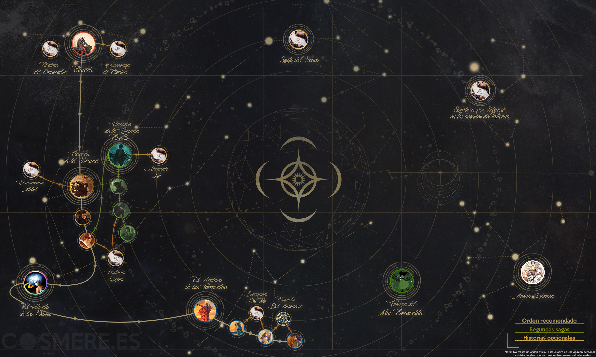

Introducción al cosmere
El universo de donde ocurren muchos de los libros

El Cosmere es el nombre del universo en el que se desarrollan la mayoría de las historias de Brandon Sanderson.
Junto a él viajaremos por la constelación de planetas que forman estos libros y que según el autor están
inspirados en Moorcock y Asimov.
Libros que no forman parte del cosmere
Brandon Sanderson no solo se dedica a escribir libros dentro del cosmere.
Aunque en este blog hablaremos principalmente del cosmere, Brandon Sanderson
ha escrito muchos libros interesantes que no forman parte de este. Algunos de estos libros son:
- El Rithmatista
- Saga de Alcatraz
- Saga Reckoners
- Escuadrón
Guía de lectura del cosmere
Cómo empezar y que orden seguir.

Hay muchas formas de comenzar a leer el cosmere, pero para poder entender todo al 100% hay que leer los libros
en un orden. No basta con leer una saga primero y despues avanzar por la que vos prefieras,
de ese modo hay muchas cosas de las que te vas a perder y no van a tener sentido otras tantas cosas.
- Dragonsteel
- Arena Blanca
- Elantris
- El alma del emperador
- Nacidos de las brumas era 1
- El aliento de los dioses
- Nightblood
- Sombras por silencio en los bosques del infierno
- Arcanum Ilimitado
- El archio de las tormentas era 1
- Nacidos de la bruma era 2
- El archivo de las tormentas era 2
- Nacidos de la bruma era 3
- Sexto del caos
- Nacidos de las brumas era 4